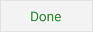

Sharing and Synchronizing
Once your device is synchronized with cloud storage you will be
asked how often auto synchronization should be scheduled. The
default action is "Never" meaning that no auto synchronization will
occur and that you will manually synchronize your data by pressing
the  button
on your shopping list when needed.
button
on your shopping list when needed.
The last information needed to complete setting up cloud storage
with Google Drive is setting which grocery list has the priority in
the event of any conflicts in data. Choose:
- "Not Shared" if this is the only device you are using and
cloud storage is primarily used as a backup.
- "Primary and Shared" if the grocery list on this device is the
primary list which is shared TO other devices. In
setting up additional devices the "Secondary and Shared" option
should be selected.
- "Secondary and Shared" if the grocery list on this device is
shared FROM another primary device. One
other device should be designated as "Primary and Shared" to use
this option.
 The "Done"
button completes cloud storage setup, saves your choices and returns
you to the Settings menu.
 Pressing the
"Cancel" button disables use of Google Drive and returns you to the
Settings menu.
Pressing the
"Cancel" button disables use of Google Drive and returns you to the
Settings menu.